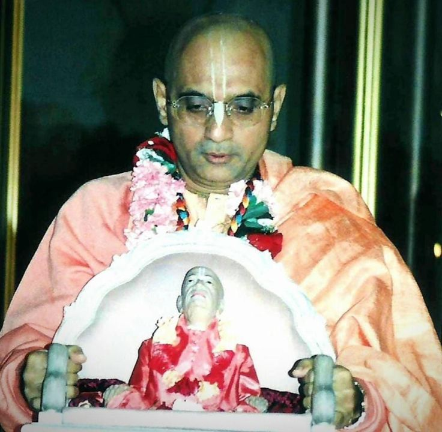

Big Concern of Bhakti Cāru Swāmi Mahārāja
Posted on : 15th April, 2025

Another big concern for Bhakti Chāru Swāmi was to establish for ISKCON the vision that Prabhupāda is the principal guru for everyone. So, he started seminars which would help devotees appreciate Prabhupāda's unique preeminence in this world and in the ISKCON movement. He took the time out to do that apart from other seminars like the Vaishnava etiquette seminar. But this one was of great concern for him since he was thinking that after many of us go and pass on, Prabhupāda will probably be really in the background. He will be marginalized, or things will be deluded in terms of our attention to Srīla Prabhupāda as generations go on. That was also a sort of a pet project for me too. I always belived Prabhupāda is our Jesus and that if we don't establish a way, a mechanism or the touch with the truth of what is the real meaning of Founder Ācārya then Prabhupāda would be or remain very much in background.
~ HH Bhakti Mārga Swāmi (ACBSP), Excerpt from a Homage to Bhakti Chāru Swāmi, July 14, 2020.
Share this to everyone, let everyone know and share this concern of Srīla Bhakti Chāru Swāmi Mahārāja.
Also are you part of solution of this concern of part of the Problem?
~ Admin